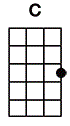

#? üî•Big In Japan



.gif "|(Dm)")


(Intro)
[|] [Dm] [|] [Bb] [|] [C] [|] [A] [|] [x2]
(Verse)
[Dm] Winter cityside
[Bb] Crystal bits of snowflakes [C] all around my head and in the [A] wind
[Dm] I had no illusions
[Bb] That I'd ever find a [C] glimpse of summer's heatwaves in your [A] eyes
[Dm] You did [Bb] what you did to [C] me, now it's [A] history I see
[Bb] ...
Here's my [Gm] comeback on the [A] road again
[Pre-Chorus]
[Dm] Things will [Bb] happen while they can
[C] ...
I will [Am] wait here for my [Bb] man tonight, it's [Gm] easy when you're [A] big in Japan
(Chorus)
Oh, when you're big in [Dm] Japan, [Bb] tonight
Big in [C] Japan, be [Am] tight, big in [Bb] Japan, ooh the [Gm] eastern sea's [A] so blue
Big in [Dm] Japan, [Bb] alright, pay, then [C] I'll sleep by your [Am] side
Things are [Bb] easy when you're [Gm] big in [A] Japan, oh when you're big in [Dm] Japan
(Instrumental)
[|(Dm)] [Bb] [|] [C] [Am] [|] [Bb] [Gm] [|] [A] [|] [x2]
(Verse)
[Dm] Neon on my naked skin
[Bb] Passing silhouettes of [C] strange illuminated [A] mannequins
[Dm] Shall I stay here at the zoo
[Bb] ...
Or should I go and change my [C] point of view for other [A] ugly scenes
[Dm] You did [Bb] what you did to [C] me, now it's [A] history [Gm][Bb] IIIIIIIIIIIII [A] see
[Pre-Chorus]
[Dm] Things will [Bb] happen while they can
[C] ...
I will [Am] wait here for my [Bb] man tonight, it's [Gm] easy when you're [A] big in Japan
(Chorus)
Oh, when you're big in [Dm] Japan, [Bb] tonight
Big in [C] Japan, be [Am] tight, big in [Bb] Japan, ooh the [Gm] eastern sea's [A] so blue
Big in [Dm] Japan, [Bb] alright, pay, then [C] I'll sleep by your [Am] side
Things are [Bb] easy when you're [Gm] big in [A] Japan
Oh, when you're big in [Dm] Japan, [Bb] tonight
Big in [C] Japan, be [Am] tight, big in [Bb] Japan, ooh the [Gm] eastern sea's [A] so blue
Big in [Dm] Japan, [Bb] alright, pay, then [C] I'll sleep by your [Am] side
Things are [Bb] easy when you're [Gm] big in [A] Japan, oh when you're big in [Dm] Japan
(Instrumental)
[|(Dm)] [Bb] [|] [C] [Am] [|] [Bb] [Gm] [|] [A] [|] [x2]
(Chorus)
Oh, when you're big in [Dm] Japan, [Bb] tonight
Big in [C] Japan, be [Am] tight, big in [Bb] Japan, ooh the [Gm] eastern sea's so [A] blue
Big in [Dm] Japan, [Bb] alright, pay, then [C] I'll sleep by your [Am] side
Things are [Bb] easy when you're [Gm] big in [A] Japan
Oh, when you're big in [Dm] Japan, [Bb] tonight
Big in [C] Japan, be [Am] tight, big in [Bb] Japan, ooh the [Gm] eastern sea's so [A] blue
Big in [Dm] Japan, [Bb] alright, pay, then [C] I'll sleep by your [Am] side
Things are [Bb] easy when you're [Gm] big in [A] Japan, oh when you're big in [Dm] Japan
(Outro)
[|(Dm)] [Bb] [|] [C] [Am] [|] [Bb] [Gm] [|] [A] [|]